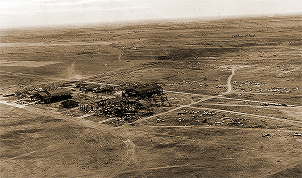
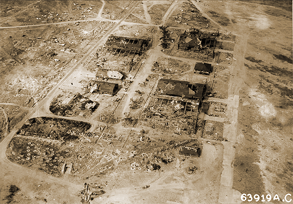

|
j
a v a s c r i p t |
January 29, 1945
Yesterday's bombing was a clean sweep: Cavite, Corregidor, Bataan and Subic Bay. Main American forces have taken Angeles and its four airfields, plus Mexico, only several miles from San Fernando. In Clark Field the Americans took intact quantities of Japanese equipment including 200 new airplane motors, 40 new artillery pieces, transmitters, wires, foodstuff, ammunition, machine tools, whatever. Rosario, below Baguio, was taken, clearing a thorn on the American left flank. The Americans are 36 air miles from Manila, about 44 by road. The Japanese kept blowing up military assets in Manila today. We heard at least 50 heavy explosions and saw a few fires. The Japanese colonel at the Kaufmann's is leaving tonight or tomorrow morning. The McMickings were released yesterday — only Carlos Perez-Rubio was kept in. R.I.P. Pedro Aunario, 66, of a long but recent illness, sparing the fanatical pro-Japanese newspaperman from future grief.

Clark Destruction

Detail Clark Hangars
|
|
|
|
|